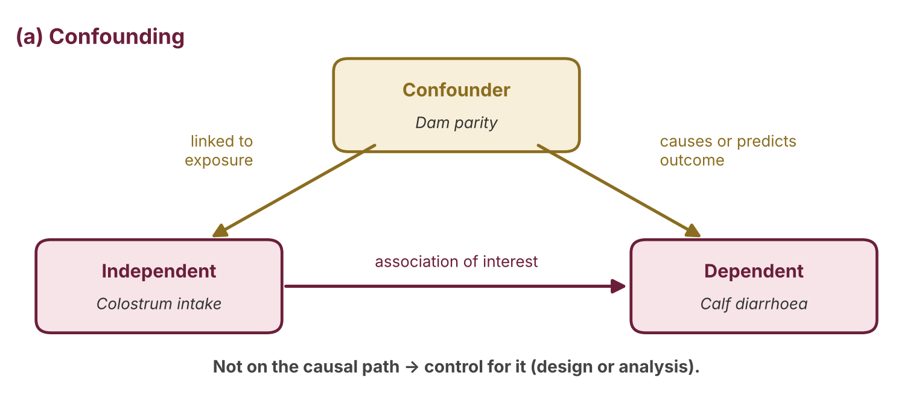

Step 2
2. Dependent and independent variables
Name the variables inside the objective. Every analytical objective has at least one dependent variable (outcome) and one independent variable (exposure). Other variables, confounders, can distort the link.
| Term | Also called | Colostrum example |
|---|---|---|
| Dependent (Y) | Outcome, response | Diarrhoea in first 30 days (yes/no) |
| Independent (X) | Exposure, predictor, risk factor, treatment | Colostrum intake (adequate / inadequate) |
| Confounder | Confounding variable | Dam parity |
A quick test“Does the value of A depend on B?” If yes, A is dependent. Time order helps: X usually comes first. In a case-control study animals are chosen by outcome, but the outcome is still the dependent variable.
2.2 Confounding

A confounder must satisfy all three conditions:
- It is associated with the exposure (X) in the study population.
- It is a cause of the outcome (Y), or a marker of a cause, even among the unexposed.
- It is not on the causal pathway between X and Y.
Example. First-calf heifers produce less colostrum (link to X), and their calves are at higher risk of diarrhoea for other reasons (link to Y). If heifer calves are over-represented in the inadequate group, part of the “colostrum effect” may be a parity effect.
Is it a confounder?
How to control confounding
| Stage | Method | How it works | Example |
|---|---|---|---|
| Design | Randomisation | Balances known and unknown confounders on average | Randomly assign calves to feeding protocols |
| Design | Restriction | Enrol only one level of the confounder | Only calves of multiparous cows |
| Design | Matching | Make groups similar on the confounder | Match each case dog to a control of same breed and age |
| Analysis | Stratification | Analyse within levels; combine with Mantel–Haenszel | Age-stratified OR (Section 8.4) |
| Analysis | Multivariable regression | Include the confounder as a covariate | Logistic regression |
Confounders can only be controlled if they are measured: list them at the planning stage.
2.3 Identify the variables
| Objective | Dependent (Y) | Independent (X) | Possible confounder |
|---|---|---|---|
| Estimate mastitis prevalence in District A | Mastitis (binary) | None – descriptive | – |
| Compare 30-day diarrhoea risk by colostrum | Diarrhoea (binary) | Colostrum (binary) | Dam parity, birth season, hygiene |
| Compare milk yield between two feeding programmes | Milk yield kg/day | Feeding programme | Parity, days in milk |
| Feed exposure in dogs with/without a rare disease | Disease (binary) | Feed type | Breed, age |
| Herd size and time to first FMD outbreak | Days to outbreak | Herd size | Animal movements, vaccination |